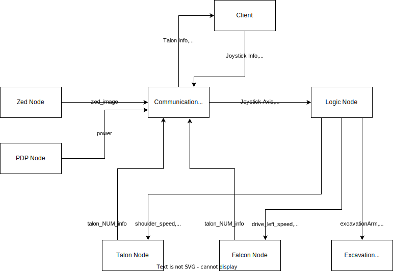

|
Razorbotz RMC 2022-2023 Documentation
|
This page is intended to provide a starting point and overview of the project. It is also a roadmap for how to get involved with the project, even if you aren't familiar with the code or technology stack. Please note that these links may not be up to date and any links should be followed at your own risk. If you find any links that no longer work or changes that need to be made, please contact me at andre.nosp@m.wbur.nosp@m.rough.nosp@m.s17@.nosp@m.gmail.nosp@m..com. Click here to view the documentation for the project. If you are not familiar with Github and the git cli, please refer to the Razorbotz Github Intro page.
To get started with the project, install the virtual machine. Then after installing the virtual machine, go through these Linux tutorials. The key objective of these tutorials is to teach how to navigate through the file structure via the terminal, as well manipulating files using commands. Because the robot is designed to be operated remotely on the lunar surface, understanding these commands is an essential skill for this project.
To install ROS2 and begin the project, please refer to the Razorbotz Installation Page. After installing ROS2, please use the following commands to run some examples and ensure ROS2 is installed correctly.
Run the following commands in one terminal in your Linux environment
In a second terminal in your Linux environment, run the following commands
The codebase currently holds the code for the previous bots Skinny and Spinner, as well as the most recent bot Scoop.
ROS2 packages all contain the following:
The src folder within a package contains the .cpp files that define nodes and supporting files for classes/objects/functions relevant to that package. To read more about ROS2 packages, please refer to the ROS2 tutorial.
The ROS2 packages currently in this project are as follows:
The Autonomy node is no longer used or under active development. The functionality of the Autonomy node has been moved to the Logic node. The 2021-2022 node relationships are shown in the image below.

The Talon and Falcon nodes have been combined into a single instance on the image to reduce the complexity and make it easier to understand. The message names that are passed from each node are shown. All motor controller nodes, ie Talon, Falcon, and Exavation nodes, also subscribe to two publishers from the communication node that are called the GO and STOP publishers. These subscriptions were omitted from the diagram for the sake of clarity.
This project uses Doxygen to generate documentation for the files automatically. To make documentation easier for all users, Doxygen is hosted on the Github and does not need to be downloaded by contributers. To learn more about the Doxygen formatting, please refer to the Documenting the code section of the Doxygen docs. The documentation for this project can be found at the project website that is found here.
To standardize the documentation across multiple authors, the following documentation template will be used throughout the project. To see an example of how files should be commented to generate the documentation correctly, see Example.cpp. To view the documentation generated for the Example.cpp file, please click here.
Files
Functions
To gain a better understanding of ROS2, please refer to the following tutorials.
General Reference Material:
Hardware Documentation:
C++ Reference Material: